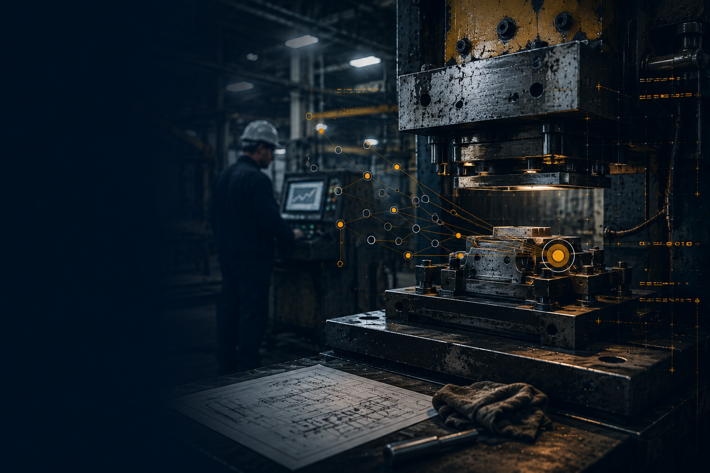

Opsteady diagnoses where a site stands, orders what matters most, and gives your own team what they need to deploy it. No consultant.
More headcount rarely fixes a bottleneck.
It just moves the queue somewhere else.
Whatever the Health Check finds, there's a structured, sequenced response behind it — not a list for you to pick from yourself.
Diagnose → Prioritise → Sequence → Act
Every signal resolves into one sequenced response — never a menu, never a blended score.
A working template, a Pro guide, and training built to be used on the floor within days — not filed away.
They were about to add a shift to Press 3. The constraint was somewhere else entirely.
More press capacity would lift output.
The real constraint was in finishing, not the press.
No extra headcount approved.
Six weeks. £0 extra headcount.
Fictional company. Illustrative sequence. The method that established the constraint is not shown here.
Curious how the constraint was found? The Bottleneck Analysis Tool sits behind this finding.
View the product →